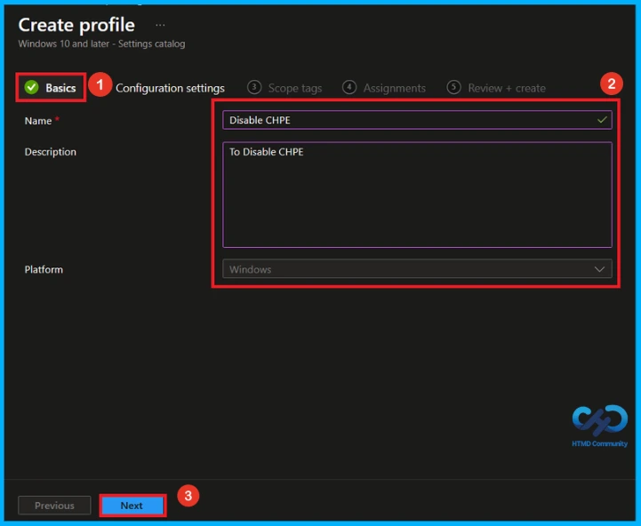
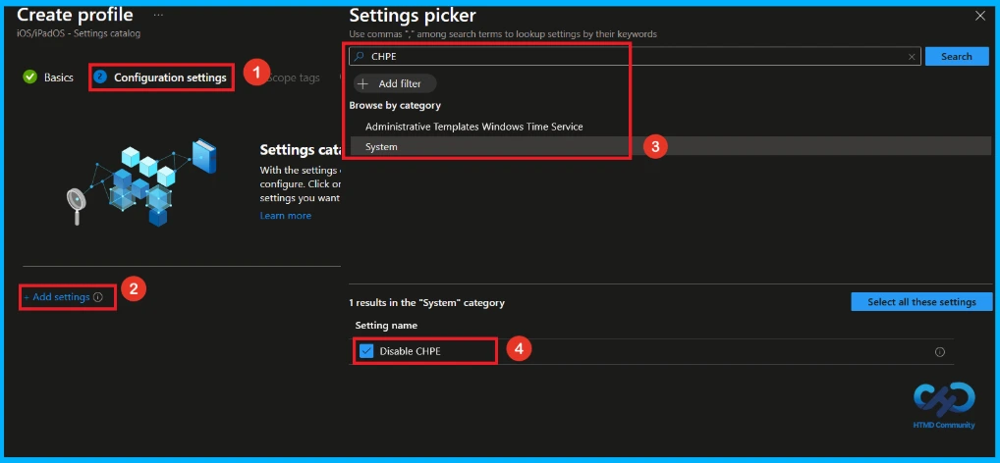
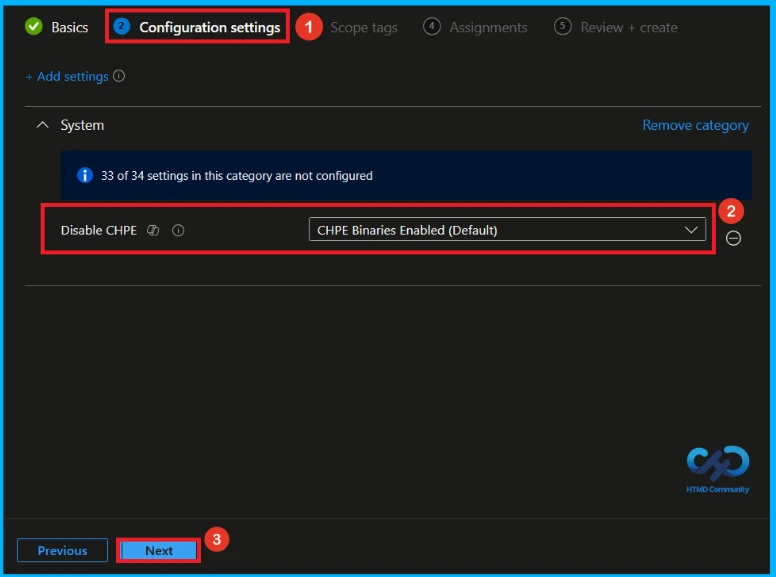
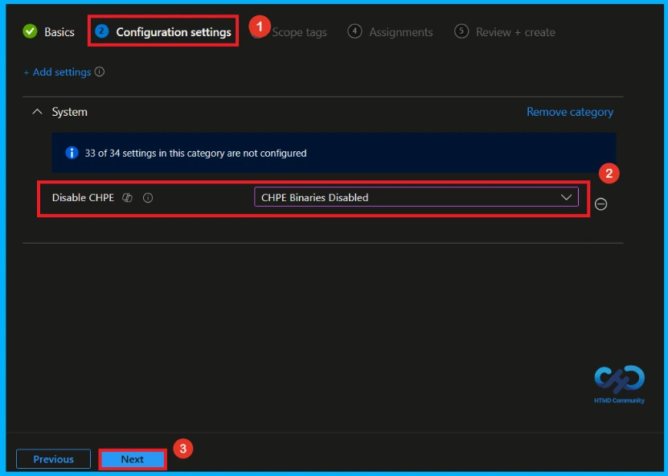
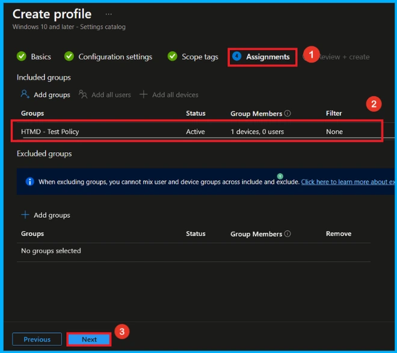
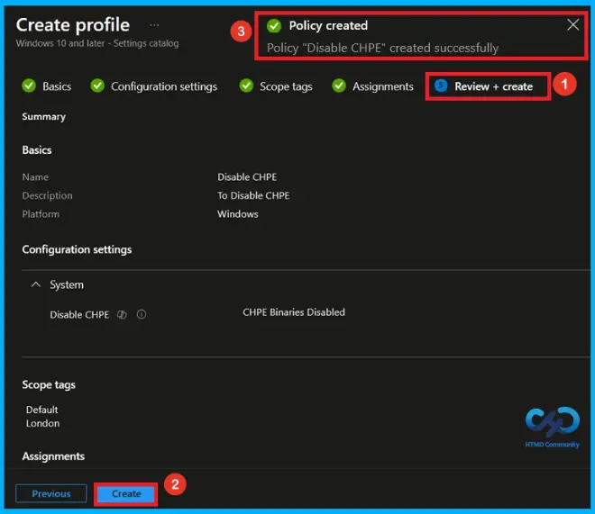
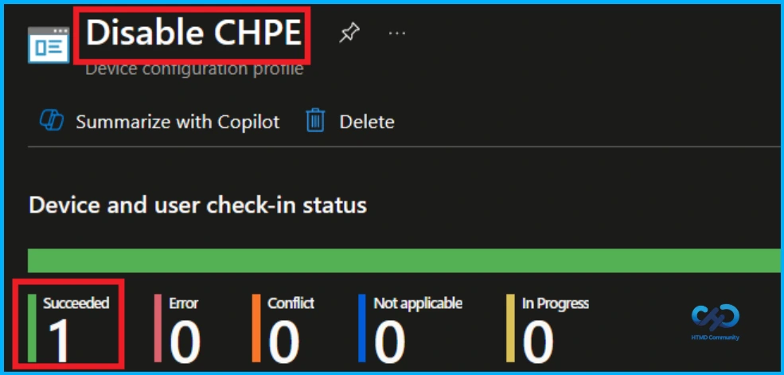
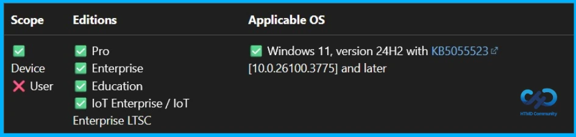
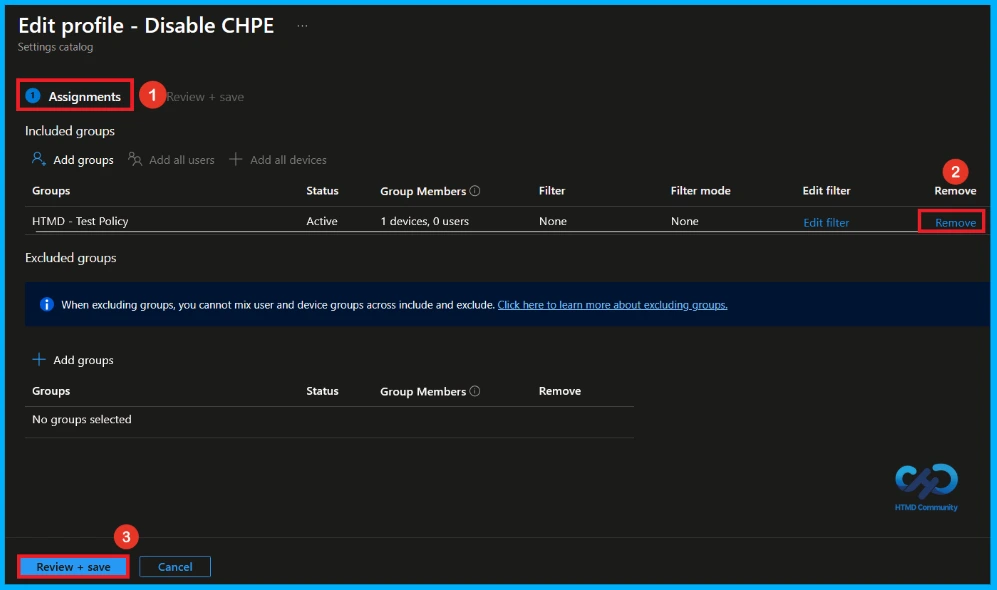
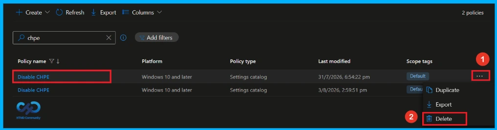

Key Takeaways
- This policy applies only to ARM64 devices and has no effect on x64 devices.
- Enabling the policy prevents ARM64 devices from loading CHPE binaries.
- Disabling or leaving the policy unconfigured allows ARM64 devices to load CHPE binaries.
- Enabling this policy is required to support hotpatching on ARM64 devices.
Hey, let’s discuss about how to Manage Windows ARM64 Hotpatch with CHPE Binary Loading Policy in Microsoft Intune. This policy setting controls whether loading CHPE binaries is disabled on ARM64 devices. It applies only to ARM64 systems and has no effect on x64 devices. Administrators can use this policy to determine whether ARM64 devices are allowed to load CHPE binaries.
Table of Contents
Manage Windows ARM64 Hotpatch with CHPE Binary Loading Policy in Microsoft Intune
If you enable this policy setting, ARM64 devices will not load CHPE binaries. Enabling this setting is required to support hotpatching on ARM64 devices. If you disable the policy or leave it unconfigured, ARM64 devices will continue to load CHPE binaries by default.
How to Create a Policy in Intune
First, you need to configure this policy. Start by signing in to the Microsoft Intune Admin Center. Then, click on Devices. Under the Devices section, go to the Configuration tab, where you will find a Create option. Click on it and select New policy.

Create a Profile
This is the next step you need to take for policy Creation. When creating a profile, you must select the platform and profile type.Here, I configure the policy for Windows 10 and later platforms and the Setting catalog profile. Then click on the Create button.

Basic Tab of Disable CHPE Policy
The first step is to name the policy. A policy name helps administrators identify the policy and understand its purpose. The Name field is mandatory. Here, i gave the policy name as Disable CHPE and description as to disable CHPE. Click Next to continue.

Configure CHPE Policy
On this configuration tab, click on add settings to open the settings picker. Here, I selected the policy by browsing the policy name (CHPE), then you can see its category system, select the category and enable the CHPE policy setting.

Enable CHPE Policy
After selecting the CHPE policy and closing the Settings Picker, the selected policy will appear on the Configuration page. This page has two options: Enable and Disable. By default, the CHPE policy is set to Enable. Click Next to continue.

Disable CHPE Policy
This policy provides two options CHPE Binaries Enabled (default) and CHPE Binaries Disabled. By default, the policy is set to CHPE Binaries Enabled. To disable CHPE binaries, select CHPE Binaries Disabled from the drop-down menu. After that, click Next to continue.

With Scope tags, you can control the visibility of the policy and organize resources. You can select the scope tag by clicking the +Select scope tags. Here, the London scope tag has been selected. After selecting the scope tag, click the Next button to continue.

Assignments Tab for Selecting Group
To assign the policy to specific groups, go to the Assignment tab. Click +Add groups under Included groups and select the HTMD – Test Policy group from the list. After selecting the group, click the Select button to continue. Then, click Next button to proceed.

Final Step of CHPE Policy Creation
At the final Review + Create step, we see a summary of all configured settings for the new profile; after reviewing the details and making any necessary changes by clicking Previous. We click Create to finish, and a notification confirms that the “Disable CHPE created successfully”.

Device and User Check-in Status
The Monitoring Status page shows the status of the policy deployment and whether it was successful or not. To check the policy status, sync the assigned device using the Company Portal. Then, open the Intune Portal, go to Devices > Configuration, and search Disable CHPE policy. Here, the policy status is displayed as Successful.

Configuration Service Provider (CSP)
Configuration Service Provider (CSP)
The Policy Configuration Service Provider (CSP) is used by organizations to manage and configure settings on Windows 10 and Windows 11 devices. It provides information about the policy, including its description framework properties, and allowed values.
Description framework properties:
- Format – int
- Access Type – Add, Delete, Get, Replace
- Default – 0
Allowed Values
| Value | Description |
|---|---|
| 0(Default) | CHPE Binaries Enabled (Default). |
| 1 | CHPE Binaries disabled |

How to Remove Assigned Group from CHPE Policy
If you need to remove a group from a policy assignment for security updates. Open the CHPE policy from the configuration tab and click on the edit button. Then, click on the Remove button. Click Review + Save after making the changes.
For detailed information, you can refer to our previous post – Learn How to Delete or Remove App Assignment from Intune using by Step-by-Step Guide.

How to Delete CHPE Policy form Intune
You can easily delete the policy from the Intune Portal. Go to the Configuration section and select the Disable CHPE policy. Click the three dots next to the policy and select Delete. The policy will be removed and no longer applied to client devices.
For detailed information, you can refer to our previous post – How to Delete Allow Clipboard History Policy in Intune Step by Step Guide.

Need Further Assistance or Have Technical Questions?
Join the LinkedIn Page and Telegram group to get the latest step-by-step guides and news updates. Join our Meetup Page to participate in User group meetings. Also, Join the WhatsApp Community and WhatsApp Channel to get the latest news on Microsoft Technologies. We are there on Reddit as well.
Author
Anoop C Nair is Workplace Technology solution architect with 25+ years of experience in global enterprise organizations such as JP Morgan, Capgemini, etc. He is Microsoft Certified Trainer. Microsoft MVP from 2015 onwards for consecutive 11 years! He also conducts Intune and modern workplace tech training for enterprise organizations. He is Blogger, Speaker, and Founder of HTMD Community and HTMD Conference. His focus is on Device Management technologies such as Intune, Windows, Cloud PC. He writes about technologies like Intune, SCCM, Windows, Cloud PC, Windows, Entra, Microsoft Security.